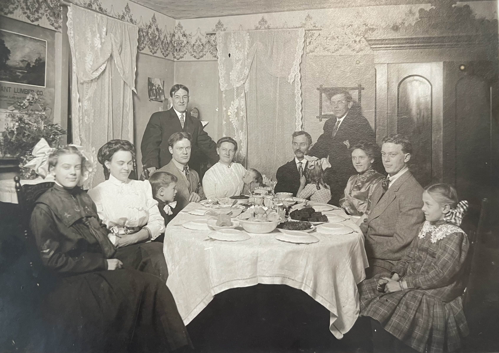

This is, at its heart, the story of a man named James Garvey Hopkins — a quiet boy from DeKalb, Illinois, who took an oath in the eighth grade, sailed a gunboat across the Pacific, became a thoracic surgeon, and never once broke a promise. Most of this book will follow him: through the Navy V-12 program and Midshipmen's School, through the commissioning of USS LCS(L)(3)-42 at Portland, through Zamboanga and Borneo and the minefields of the Yellow Sea, and finally home to a life of medicine and family in the American Southwest.
But to understand what he came home to — to understand the woman who met him in the corridors of St. Luke's Hospital in Chicago, the woman who would run his household and raise his children and match his quiet discipline with a fearlessness entirely her own — you have to go back further. You have to cross an ocean.
Patricia Nielson did not come from nowhere. She came from a family that had been building something for generations — crossing water, putting down roots, filling churches and kitchens and baseball diamonds with the particular energy of Danish immigrants who had decided that America was worth the trouble. To know Pat is to know where she came from. And where she came from was Denmark, by way of St. Louis, by way of the shores of Lake Michigan.
They came from Denmark, as so many did in those years — a family named Nielsen, carrying with them whatever a Danish family carries across an ocean: a language, a faith, a stubbornness that would prove more durable than any piece of luggage. George Nielsen brought his family to St. Louis, Missouri, and settled into the vast current of Scandinavian immigration that was remaking the American Midwest one household at a time.
St. Louis in the late nineteenth century was a city of arrivals. Germans, Irish, Czechs, and Scandinavians poured in by the tens of thousands, filling the factories and stockyards and breweries, building churches in their own languages, establishing the rhythms of lives that would echo through generations. The Nielsens were part of that tide — unremarkable in the demographics, extraordinary in the particulars, the way every immigrant family is.

George and his wife had ten children. Say that number out loud and let it settle: ten. Johanne, William, Harold, Emelie, Dan, Maren, Geneva, Helen, Lillian, and Julia. A household that must have sounded like a small country, with its own internal politics, its own economy of chores and hand-me-downs, its own unwritten constitution governing who sat where at dinner and who got the last piece of bread.
In 1890, the family left St. Louis and moved to Fruitport, Michigan — a small community near the shores of Lake Michigan. A year later, they moved again, to Muskegon. This was timber country, lumber country, a place where Scandinavian immigrants felt something close to home in the cold winters and the pine forests and the vast gray lake that stretched to the horizon like a landlocked sea.
The Danish Lutheran Church became the center of the family's life. This was the pattern for Scandinavian immigrants everywhere — the church was not merely a place of worship but a community center, a social club, a place where you heard your own language spoken with the right inflections and ate food that tasted the way food was supposed to taste. The Nielsens attended faithfully. They would continue to attend for more than half a century.
In 1901, George built the house at 38 Clinton Street in Muskegon. It was the kind of house an immigrant builds when he has finally decided he is staying — solid, practical, meant to last. It would become the family's anchor, the address that all ten children would remember as the place where everything began.
The Danish Lutheran Church was more than a building — it was the architecture of belonging. For George and his wife, it was the one place in America where the world still made sense in the old language, where the psalms were sung the way they'd been sung in Denmark, where the coffee after services tasted right because the women who made it remembered how coffee was supposed to taste. For their children, it was the bridge between the parents' world and the American one — the place where you learned that faith and community were not separate things but the same thing, expressed in potluck dinners and Christmas Eve services and the quiet expectation that you would show up, every Sunday, without being asked.
George Nielsen had crossed an ocean, raised ten children, and built a house. He had done what immigrants do. The rest would be up to his children.